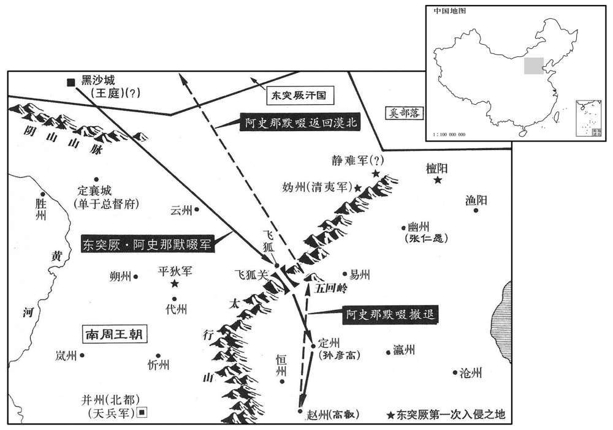

公元698年资治通鉴：本年记事、原文与白话对照
按原书编年位置阅读；追叙和史论不等于本年发生的事件。白话采用所据译本，缺译不以生成译文补齐。
卷206 · 本年记事
公元698年 · 唐则天顺圣皇后圣历元年
圣历元年〔（戊戍、六九八）〕
本年事件索引（现代整理）
- 武则天在通天宫祭祀并改元
- 宗楚客罢去政事
- 豆卢钦望罢相任太子宾客
- 狄仁杰等劝武则天立李显为储君而非武承嗣
- 吉顼劝张易之兄弟为立庐陵王进言
- 武则天召庐陵王李显及其家属赴神都
- 武则天祭祀太庙
- 娄师德兼任陇右诸军大使
- 武延秀奉命迎娶默啜之女
- 张柬之反对武延秀迎娶突厥公主，被贬外任
- 杜景俭罢相改任秋官尚书
- 默啜拒绝武延秀求婚，扣押阎知微并进攻河北
- 默啜列举唐朝失信之事，声称出兵是为夺取河北
- 裴怀古拒绝投降默啜，逃脱后还朝
- 敬晖停止百姓筑城，命其先行秋收
- 王方庆罢相改任麟台监
- 武承嗣未能成为太子，郁郁而终
- 武三思任检校内史，狄仁杰兼任纳言
- 狄仁杰举荐儿子任官，武则天称其可比祁奚
- 元行冲劝狄仁杰纳谏，狄仁杰视他为诤友
- 武重规等率三十万兵讨伐默啜
- 默啜攻陷定州，杀死刺史及吏民数千人
- 武攸宁同任凤阁鸾台三品
- 唐朝改称默啜为斩啜
- 阎知微被迫在赵州城下与突厥人合跳万岁乐
- 高叡夫妇不屈默啜，赵州陷后殉国
- 李旦让位，武则天立庐陵王李显为太子
- 李显任河北道元帅，报名从军者骤增
- 狄仁杰任河北道行军副元帅，代太子掌军
- 薛讷劝武则天坚定立太子之命以安人心
- 苏味道任平章事，以模棱两可处事闻名
- 默啜杀掠赵州、定州俘民万余人后退回漠北
- 武懿宗、武攸归奉命统领都城驻军
- 狄仁杰请求赦免被突厥胁迫的河北百姓，战后安抚民众
- 姚元崇、李峤同任平章事
- 阎知微被磔死，亲族遭诛
- 段瓒逃归获赏，杨齐庄因被疑叛国而遭酷刑处死
- 田归道升任夏官侍郎，深受信任
- 张柬之请求撤销姚州等边地驻军，未获采纳

本年形势与背景参考图
正月，甲子朔，冬至，太后享通天宫；〔考异曰：实录云：「正月，壬戍，享通天宫。」按长历，此年一月壬戍朔。实录误也。今从唐历、统纪、新本纪。〕赦天下，改元。
正月，甲子朔（疑误），冬至，太后在通天宫祭祀；大赦天下，更改年号。
夏官侍郎宗楚客罢政事。
夏官侍郎宗楚客罢免相职。
春，二月，乙未，文昌右相、同凤阁鸶台三品豆卢钦望罢为犬子宾客。
春季，二月，乙未（初四），文昌右相、同凤阁鸾台三品豆卢钦望被罢免为太子宾客。
武承嗣、三思营求为太子，数使天说太后曰：「自古天子未有以异姓为嗣者。」太后意未决。狄仁杰每从容言于太后曰：「文皇帝栉风沐雨，亲冒锋亣，以定天下，传之子孙。〔数，所角翻。说，输芮翻。从，千容翻。太宗谥文皇．帝。〕大帝以二子托陛下。〔高宗谥天皇大帝。二子，谓庐陵王及皇嗣也。〕阶下今乃欲移之他族，无乃非天意乎！且姑侄之与母子孰亲﹖〔太后之于承嗣、三思，姑侄也。于庐陵王、皇嗣，母子也。〕陛下立子，则千秋万岁后，配食太庙，承继无穷；立侄，则未闻侄为天子而祔姑于庙者也。」太后曰：「此朕家事，卿勿预知。仁杰曰：「王者以四海为家，四海之内，孰非臣妾，何者不为陛下家事！君为元首，臣为股肱，义同一体，况臣备位宰相，岂得不预知乎！」又劝太后召还庐陵王。〔庐陵王，光宅元年迁均州，垂拱元年迁房州。〕王方庆、王及善亦劝之。太后意稍寤。他日，又谓仁杰曰：「朕梦大鹦鹂两翼皆折，何也。」〔折，而设翻。〕对曰：「武者，陛下之姓，两翼，二子也。陛下起二子，则两翼振矣。」太后由是无立承嗣、三思之。
武承嗣、武三思谋求充当太子，多次指使人劝太后说：“自古以来的天子没有以外姓人为继承人的。”太后还拿不定主意，狄仁杰常从容不迫地对太后说：“太宗文皇帝不避风雨，亲自冒着刀枪箭镞，平定天下，传给子孙。高宗大帝将两个儿子托付陛下。陛下现在却想将国家移交给外姓，这不是不符合上天的意思吗？而且姑侄与母子相比谁更亲？陛下立儿子为太子，则千秋万岁之后，配祭太庙，代代相承，没有穷尽；立侄儿为太子，则未听说过侄儿当了天子而合祭姑姑于太庙的。”太后说：“这是朕家里的事，你不要参与。”狄仁杰说：“君王以四海为家，四海之内，谁不是臣妾，什么事不是陛下家里的事！君主是元首，臣下为四肢，意思是一个整体，何况我凑数任宰相，哪 能不参与呢！”他又劝太后召回庐陵王。王方庆、王及善也劝说太后。太后心里稍微醒悟。有一天，太后又对狄仁杰说：“我梦见大鹦鹉两翼都折断，这是什么意思？”回答说：“武是陛下的姓，两翼是两个儿子。陛下起用两个儿子，则两翼便振作起来了。”太后因此便打消了立武承嗣、武三思为太子的意思。
孙万荣之围幽州也，移檄朝廷曰：「何不归我庐陵王﹖」吉顼与张易之、昌宗皆为控鹤监供奉，〔是年置控鹤监以处近幸。〕易之兄弟亲狎之。顼从容说二人曰：「公兄弟贵宠如此，非以德业取之也，天下侧目切齿多伏。不有大功于天下，何以自全﹖窃为公忧之！」〔为，于伪翻；下屡为、复为同。〕二人惧，流涕问计。顼曰：「天下士庶未忘唐德，咸复思庐陵王。〔复，扶又翻。〕主上春秋高，大业须有所付；武氏诸王非所属意。〔属，之欲翻。〕公何不从容劝上立庐陵王以系苍生之望！如此，非徒免祸，亦可以长保富贵矣。」二人以为然，承间屡为太后言之。〔间，古苋翻。〕太后知谋出于顼，乃召问之，顼复为太后具陈利害，太后意乃定。〔考异曰：世有狄梁公传，云李邕撰，其辞鄙诞，殆非邕所为。其言曰：「后纳诸武之议，将移宗社，拟立武三思为储副，迁庐陵王于房陵。诸武阴计，日夜献谋曰：『陛下姓武，合立武氏，未有天子而取别姓将为后者也。』天后既已许，礼问群臣曰：『朕年齿将衰，国无储主，今欲择善，谁可当之﹖朕虽得人，终在群议。』诸宰臣多闻计定，，言皆希旨；仁杰独退立，寂无一言。天后问曰：『卿独无言，当有异见。』公曰：『有之。臣上观干象，无易主之文；中察人心，实未厌唐德。』天后曰：『乡何以知之﹖』公曰：『顷者匈奴犯边，陛下使梁王三思于都市召募，一月之外，不满千人。后庐陵王踵之，未经二旬，数盈五万。以此观之，人心未去。陛下将欲继统，非庐陵王，余实非臣所知。』天后震怒，命左右扶而去之。」按庐陵王为河北元帅，在立为太子后，且当是时睿宗为皇嗣，若仁杰请以庐陵王继统，则是劝太后癈立也。此固未可信。或者仁杰以庐陵母子至亲而幽囚房陵，劝召还左右，则有之矣。谈宾录曰：「圣历二年，腊月，张易之兄弟贵宠逾分，惧不全，请计于天官侍郎吉顼。顼曰：『公兄弟承恩深矣，非有大功于天下，自古罕有全者。唯有一策，苟能行之，岂止全家，亦当享茅土之封耳；除此之外，非顼所谋。』易之兄弟泣请之。顼曰：『天下思唐德久矣，主上春秋高，武氏诸王殊非所属意。公何不从容请迸庐陵，以系生人之望﹖』易之乃承间屡言之，则天意乃易；既佑顼首谋，乃召问顼。顼曰：『庐陵、相王皆陛下之子，高宗切托于陛下，唯陛下裁之。』则天意乃定。」御史台记曰：「则天置控鹤府，顼与易之、昌宗同于府供奉，与昌宗亲狎。昌宗自以贵宠踰分，惧不全，请计于顼，」云云，如谈实录。盖太后宠信诸武，诛鉏李氏，虽己子庐陵亦废徙房陵，故仁杰劝召还左右，以强李氏，抑诸武耳。张、吉非能为唐社稷谋也，欲求已利耳。若仍立皇嗣，则已有何力！故劝太后立庐陵为太子，而太后从之。然则欲召还庐陵者，仁杰之志也；立为太子者，张、吉之谋也。谈宾言圣历二年及以顼为天官侍郎，台记谓睿宗为相王，则皆误也。新狄仁杰传云：「张易之尝从容问自安计。仁杰曰：『唯劝迎庐陵王可以免祸。』计仁杰亦安肯与易之深言此事！狄梁公传又云：「后经旬，召公入，曰：『朕昨夜梦与人双陆，频不见胜，何也﹖』对曰：『双陆不胜，盖为宫中无。此是上天之意，假此以示陛下，安可久虚储位哉﹖』天后曰：『是朕家事，断在胸中，卿岂合预焉！』仁杰对曰：『臣闻王者以天下为家，四海之内，悉为臣妾，何者不为陛下家事！君为元首，臣为股肱，臣安得不预焉！』又命扶出，竟不纳。」按于时皇嗣在宫中，不得言无子及久虚储位也。朝野佥载云：「则天曾梦一鹦鹉，羽毛甚伟，两翅俱折。以问宰臣，群公默然。内史狄仁杰曰：『鹉者，陛下姓也。两翅折者，陛下二子庐陵、相王也。陛下起此二子，两翅全也。』魏王承嗣、武三思连项皆赤。后契丹反，围幽州，撽朝廷曰：『还我庐陵、相王来！』则天乃忆狄公之言，谓之曰：『卿曾为我占梦，今乃应矣。朕欲立太子，何者为得﹖』仁杰曰：『陛下内有贤子，外有贤侄，取拾详择，断在宸哀。』则天曰：『我自有圣子，承嗣、三思是何疥癣！』承嗣等惧，掩耳而走。即降敕追庐陵。河内王等奉，不许入城，龙门安置。贼徒转盛，陷没翼州。则天急，乃立庐陵王为太子，充元帅。初，募兵无有应者，闻太子行，北邙山头兵满，无容人处；贼自退散。」按是时睿宗未为相王。又仁杰若言内有贤子，外有贤侄，乃是怀两端也。今采众说之可信者存之。〕
孙万荣包围幽州，传送檄文给朝廷说：“为何不送回我们的庐陵王？”吉顼与张易之、张昌宗都任控鹤监供奉，张易之兄弟与吉顼亲近。吉顼不慌不忙地劝他二人说：“您们兄弟如此贵显得宠，但并不是靠品德功业取得的，天下对你们怒目而视、咬牙切齿的人很多。没有大功劳于天下，用什么保全自己？我为你们担忧！”二人畏惧，流着泪询问计策。吉顼说：“天下官民还未忘记唐朝的恩德，都还思念着庐陵王。皇上年事已高，皇帝的大业需有所付托；武氏诸王不是她注意的对象，您何不从容地劝皇上立庐陵王以维系百姓的期望！这样，不但可以免祸，也可以长期保持富贵了。”二人认为对，趁机一再劝说太后。太后知道这个主意出自吉顼，就召他询问，吉顼又为太后备陈利害，太后的主意才最后定下来。
三月，己巳，托言庐陵王有疾，遣职方员外郎瑕丘徐彦伯〔瑕兵，故春秋鲁之瑕邑，晋、宋置兖州于此，隋开皇十三年，置瑕兵县，带兖州。〕召庐陵王及其妃、诸子诣行在疗疾。戊子，庐陵王至神都。〔考异曰：统纪云：「癸丑，遣职方员外郎徐彦伯往房州，召庐陵王男女入都医疗。狄梁公传曰：「后潜发内人十人至房州，宣敕云：『我儿在此，令内人訧看。州县长吏，仰数出数入无令混杂。』阴令内人一人以代庐陵王；令庐陵王衣内人衣服，以旧数还，州县不悟。数日达京，朝廷百僚，一无知者。旧陵王自房陵还宫，太后置之帐中，又召狄仁杰，以庐陵为言。仁杰慷慨敷奏，言发涕流。远出庐陵，谓仁杰曰：『还卿储君。』仁杰降阶泣贺。既已，奏曰：『太子还宫，人无知者，物议安审是非！』则天以为然，乃复置中宗于龙门，具礼迎归，人情感悦。」狄梁公传曰：『天后御一小殿，垂帘于后，左右隐蔽，外不能知。乃命公坐于阶下，曰：『前者所议，事实非小，寤寐反复，思卿所言，弥觉理非甚乖。朕意忠臣事主，岂在多违！今日之间，须易前见。以天下之位在卿一言，可朕意即两全，逆朕心即俱毙！』公从容言曰：『陛下所言，天子之位，可得专之。以臣所知，是太宗文武皇帝之位，陛下岂得而自有也！太宗身陷锋镝，经纶四海，所以不告劳者，盖为子孙，岂为武三思邪！陛下身是大帝皇后，大帝寝疾，权使陛下监国；大帝崩后，合归家嫡。陛下遂奄有神器，十有余年。今议缵承，岂可更异！且姑与母孰亲﹖子与侄孰近﹖』云云。天后于是歔欷流涕，命左右褰帘，手抚公背，大叫曰：『乡非朕之臣，是唐社稷之臣！』回谓庐陵王曰：『拜国老！今曰国老与尔天子！』公免冠顿首，涕血洒地，左右扶策，久不能起。天后曰：『即具所言，宣付中外，择日礼册。』公挥涕而言曰：『自古以来，岂有偷人作天子！庐陵王留在房州，天下所悉知，今日在内，臣亦不知。臣欲奉诏，若同卫太子之变，；阶下何以明臣﹖』天后曰：『安可欲向房陵！只于石像驿安置，具法驾，陈百僚，就迎之。』于是大呼万岁，储位乃定。」按武后若密召庐陵王，宫人十人既知其谋，洛阳至房陵，往来道路其远，岂得外人都不知乎！又，实录岂能构虚立徐彦伯往迎之事，及有庐陵王至自房州之日！又，于时若储位已定，岂可自三月来九月始立为太子！盖庐陵既至，太后以长幼之次欲立之，皇铜亦以此逊位，故迁延半载。今皆取实录为正。〕
三月，己巳（初九），朝廷假托庐陵王有病，派遣职方员外郎瑕丘人徐彦伯召庐陵王和他的妃、儿子们到太后驻地治病。戊子（二十八日），庐陵王到达神都洛阳。
夏，四月，庚寅朔，太后祀太庙。
夏季，四月，庚寅朔（初一），太后祭祀太庙。
辛丑，以娄师德充陇右诸军大使，仍检校营田事。〔使，疏吏翻。〕
辛丑（十二日），朝廷派娄师德充任陇右诸军大使，并检校屯田事。
六月，甲午，命淮阳王武延秀入突厥，纳默啜女为妃；豹韬卫大将军阎知微摄春官尚书，右武卫郎将杨齐庄摄司宾卿，〔考异曰：实录作「杨鸶庄」。今从佥载、旧传。〕赍金帛巨亿以送之。延秀，承嗣之子也。
六月，甲午（初六），太后命令淮阳王武延秀前往突厥，娶阿史那默啜的女儿为王妃；命豹韬卫大将军阎知微代理春官尚书，右武卫郎将杨齐庄代理司宾卿，携带大量的金帛送给突厥。武延秀就是武承嗣的儿子。
凤阁舍人襄阳张柬之谏曰：「自古未有中国亲王娶夷狄女者。」由是忤旨，〔忤，五故翻。〕出为合州刺史。〔襄阳县，汉属南郡，献帝建安十三年置襄阳郡；晋为荆州治所，宋、齐、梁为雍州，西魏为襄州。合州，汉垫江县地；南齐置东宕渠郡，西魏改垫江郡，置石镜县，寻置合州，隋改涪州，唐复为合州。旧志，合州，京师南二千四百于十里，至东都三千三百里。〕
凤阁舍人襄阳人张柬之进谏说：“自古以来从未有过中国亲王娶夷狄女人为妻的。”因此违反太后的旨意，被外放为合州刺史。
秋，七月，凤阁侍郎、同平章事杜景俭罢为秋官尚书。
秋季，七月，凤阁侍郎、同平章事杜景俭罢相职，改任秋官尚书。
八月，戊子，武延秀至黑沙南庭。突厥默啜谓阎知微等曰：「我欲以女嫁李氏，安用武氏儿邪！此岂天子之子乎！我突厥世受李氏恩，闻李氏尽灭，唯两儿在，我今将兵辅立之。」〔将，即亮翻。〕乃拘延秀于别所，以知微为南面可汗，言欲使之主唐民也。遂发兵袭静难、平狄、清夷等军，〔垂拱中置清夷军于妫州界。杜佑曰：「在城内，南去范阳二百十里。难，乃旦翻。〕静难军使慕容玄崱以兵五千降之。〔使，疏吏翻。崱，士力翻。降，户江翻。〕虏劫大振，进寇妫、檀等州。〔妫，居为翻。〕前从阎知微入突厥者，默啜皆赐之五品、三品之服，太后悉夺之。
八月，戊子（初一），武延秀到达黑沙南庭。突厥阿史那默啜对阎知微等说：“我想把女儿嫁给李氏，哪里要武氏的儿子呢！这难道是天子的儿子吗！我们突厥累世受李氏的恩典，听说李氏全被消灭，只有两个儿子还在，我现在要带兵去辅助他登上帝位。”于是他拘禁武延秀于另外的地方，任命阎知微为南面可汗，说准备让他掌管唐朝百姓，发兵袭击唐朝静难、平狄、清夷等军，唐朝静难军使慕容玄率兵五千投降。突厥兵势大为振作，进而侵扰妫、檀等州。这以前随阎知微入突厥的人，阿史那默啜都赐给他们五品、三品的官服，太后全都予以没收。
默啜移书数朝廷曰：〔数，所具翻。〕「与我蒸縠种，种之不生，一也。金银器皆行滥，非真物，二也。〔谷种，章勇翻。行，户刚翻。市列为行，市列造金银器贩卖，率殽他物以求赢，俗谓之，行作。滥，恶也。开元八年，颁租庸调法于天下，好不过精，恶不过滥。滥者，恶之极者也。〕我与使者绯紫皆夺之，三也。缯帛皆疏恶，四也。我可汗女当嫁天子儿，武氏小姓，门户不敌，罔冒为昏，五也。我为此起兵，欲取河北耳。」〔为，于伪翻。〕
阿史那默啜发文书指责唐朝廷说：“给我蒸过的谷种，播种后不生长，这是一。送来的金银器皿都质地极差，不是真货，这是二。我赐给使者红、紫色官服都被没收，这是三。送来的缯帛都稀疏粗劣，这是四。我可汗的女儿应当嫁天子的儿子，武氏是小姓，门户不相当，却来假冒骗婚，这是五。我为此而起兵，想取得黄河以北的土地。”
监察御史裴怀古从阎知微入突厥，默啜欲官之，不受。囚，将杀之，逃归；抵晋阳，形容赢悴。〔监，古衔翻。赢，伦为翻。悴，秦醉翻。〕突骑噪聚，以为间谍，欲取其首以求功。有果毅尝为人所枉，怀古按直之，大呼曰：「裴御史也。」救之，得全。至都，引见，迁祠部员外郎。〔间，古苋翻。谍，达协翻。呼，火故翻。见，贤遍翻。唐祠部郎掌祠祀、享祭、天文、漏刻、国忌、庙讳、卜筮、医药、僧尼之事，属礼部。〕
监察御史裴怀古随从阎知微入突厥，阿史那默啜想让他当官，他不接受。他被囚禁，将被处死，逃跑归来；中途到达晋阳，容貌瘦弱憔悴，唐军的精锐骑兵鼓噪聚集，以为他是间谍，打算砍下他的脑袋以求取功劳。有一名果毅曾经被别人诬陷，裴怀古为他查清平反，这时大喊说：“这是裴御史！”援救他，使他得以保全。他回到都城，太后接见，升任祠部员外郎。
时诸州闻突厥入寇，方秋，争发民修城。卫州刺史太平敬晖〔后魏分汉临汾县地，置太平县，隋、唐属绛州。〕谓僚属曰：「吾闻金汤非粟不守，柰何舍收获而事城郭乎﹖」悉罢之，使归田，百姓大悦。
当时，各州听说突厥入侵，正当秋收，争相征调农民修缮城池。卫州刺史太平人敬晖对僚属说：“我听说极坚固的城池，如果没有粮食也守不住，怎么能放弃收割而专门修缮城郭呢？”下令全部停工，放农民回田间生产，百姓很高兴。
甲午，鸶台侍郎、同平章事王方庆罢为麟台监。
甲午（初七），鸾台侍郎、同平章事王方庆被罢免为麟台监。
太子太保魏宣王武承嗣，恨不得为太子，意怏怏，戊戍，病薨。〔怏，于两翻。〕
太子太保魏宣王武承嗣，怨恨自己不能当太子，心里不高兴，戊戌（十一日），病死。
庚子，以春官尚书武三思检校内史，狄仁杰兼纳言。
庚子（十三日），朝廷任命春官尚书武三思为检校内史，狄仁杰兼纳言。
太后命宰相各举尚书郎一人，仁杰举其子司府丞光嗣，〔光宅改太府曰司府。〕拜地官员外郎，已而称职。太后喜曰：「卿足继祁奚矣。」〔左传：晋中军尉祁奚请老，晋侯问嗣焉。称解狐，其雠也，将立之，而卒。又问之。曰：「午也可。」于是以祁午为中军尉。君子谓祁奚能举其善矣，称其雠不为诏，立其子不为比。称，尺证翻。〕
太后命令宰相各荐举尚书郎一人。狄仁杰荐举自己的儿子司府丞狄光嗣，被任命为地官员外郎，后来他很胜任这个职务，太后高兴地说：“你可以继承古代荐举自己儿子的祁奚了。”
通事舍人河南元行冲，〔唐六典曰：通事舍人，即秦之谒者，晋武帝省谒者仆射，置舍人、通事各一人，隶中书。东晋令舍人通事兼谒者之任，通事舍人之名始此也。唐通事舍人十六人，掌朝见引纳及辞谢者于殿庭通奏；凡近臣文武就列，则引以进退而告其拜起出入之节；凡四方通表，华、夷纳贡，皆受而进之。〕博学多通，仁杰重之。行冲数规谏仁杰，且曰：「凡为家者必有储蓄脯醢以适口，参朮以攻疾。〔数，所角翻。参，所今翻，人参也。〕仆窃计明公之门，珍味多矣，行冲请备孳物之末。」仁杰笑曰：「吾孳笼中物，何可一日无也！」〔茏，力董翻。〕行冲名澹，以字行。
通事舍人河南人元行冲，学识渊溥，通晓的事情多，狄仁杰器重他。元行冲多次规劝狄仁杰，并且说：“凡居家的人必定储备干肉、肉酱以适应口味，储存人参、白术等药材以治病。我私下估计您家里山珍海味很多，我只请求列居药物的末位。”狄仁杰笑着说：“你是我药笼里的东西，怎么可以一天没有呢！”元行冲，名叫澹，字行冲，人们习惯称呼他的字。
以司属卿武重规为天兵中道大总管，〔光宅改宗正为司属。缘此，后置天兵军于并州城中。〕右武卫将军沙咤忠义为天兵西道总管，〔咤，切加翻。〕幽州都督下邽张仁愿为天兵东道总管，〔秦武公伐邽戎，置下邽县。陇西有上邽，故此加下字。汉属京兆，晋属冯翊，后魏置延寿郡，隋癈郡，以下邽属同州，垂拱元年，属华州。〕将兵三十万以讨突厥默啜；〔将，即亮翻。〕又以左羽林卫大将军阎敬容为天兵西道后军总管，将兵十五万为后援。
朝廷任命司属卿武重规为天兵中道大总管，右武卫将军沙吒忠义为天兵西道总管，幽州都督下人张仁愿为天兵东道总管，领兵三十万以讨伐突厥阿史那默啜；又任命左羽林卫大将军阎敬容为天兵西道后军总管，领兵十五万为后援部队。
癸丑，默啜寇飞狐，〔汉代郡广昌县有飞狐口，隋改广昌为飞狐县，属易州，唐属蔚州。〕乙卯，陷定州，杀刺史孙彦高及吏民数千人。〔考异曰：朝野佥载曰：「文昌左丞孙彦高，无他识用，性惟顽愚，出为定州刺史。岁余，默啜贼至，图其郛郭，彦高欲锁宅门，不敢诣听事，文案须微发者，于小哋内接入通判。仍简郭下精健，自授其家。贼既乘城，四面并入，彦高乃谓奴曰：『牢关门户，莫与钥匙。』其愚怯也皆此类。件而陷没，刺史之宅先歼焉。」又曰：「彦高被突厥围城数重，彦高乃入匮中藏，令奴曰：『牢掌钥匙，贼来索，慎勿与。』」死不至此，今不取。〕
癸丑（二十六日），阿史那默啜侵扰飞狐县，乙卯（二十八日），攻陷定州，杀州刺史孙彦高及官民数千人。
九月，甲子，以夏官尚书武攸宁同凤阁鸶台三品。
九月，甲子（初七），朝廷任命复官尚书武攸宁为同凤阁鸾台三品。
改默〔【章：十二行本「默」上有「突厥」二字；乙十一行本同；孔本同；张校同；退斋校同。】〕啜为斩啜。
朝廷改称阿史那默啜为斩啜。
默啜使阎知微招谕赵州，知微与虏连手蹋〔张：「蹋」下说「歌」字。〕万岁乐于城下。将军陈令英在成上谓曰：「尚书位任非轻，乃为虏蹋歌，独无凓乎！」〔为于伪翻。蹋歌者，连手而歌，蹋地以为节。万岁乐，歌曲之名。乐，音洛。〕佑微微吟曰：「不得已，万岁乐。」
阿史那默啜指派阎知微招抚晓示赵州官民，阎知微与突厥人在赵州城下手拉手、脚踏地唱《万岁乐》曲。将军陈令英在城上说道：“尚书职位不轻，却为敌人踏地歌唱，难道不感到惭愧吗！”阎知微低声吟唱道：“不得已，《万岁乐》。”
戊辰，默啜围赵州，长史唐般若翻城应之。〔长，知两翻。般，北末翻。若，人者翻。〕刺史高叡与妻秦氏仰药诈死，虏舆之诣默啜，默啜以金狮子带、紫袍示之曰：「降则拜官，不降则死！」〔降，户江翻。〕叡顾其妻，妻曰：「酬报国恩，正在今日！」遂俱闭目不言。经再宿，虏知不可屈，乃杀之。虏退，唐般若族诛；赠叡冬官尚书，谥曰节。叡，颎之孙也。〔冬官，工部。尚，辰羊翻。谥，神至翻。高颎，隋初佐命。〕
戊辰（十一日），阿史那默啜围攻赵州。长史唐般若出城接应敌人。刺史高睿和妻子秦氏服药装死，敌人把他们抬到阿史那默啜面前，阿史那默啜向他们出示金狮子带、紫袍，说：“投降则授官，不投降则处死！”高睿看着他妻子，他妻子说：“报答国家的恩典，正在今天！”于是两人都闭上眼睛不再说话。到了第二天晚上，敌人知道不能使他们屈服，便杀死他们。敌人退走后，唐般若被灭族；朝廷追赠高睿为冬官尚书，定谥号为“节”。高睿是高的孙子。
皇嗣固请逊位于庐陵王，太后许之。壬申，立庐陵王哲为皇太子，复名显。〔嗣，祥吏翻。复，扶又翻，又音如字。〕赦天下。
皇嗣坚持请求让位于庐陵王，太后同意。壬申（十五日），立庐陵王李哲为皇太子，恢复原来的名字李显，大赦天下。
甲戍，命子为河北道元帅以讨突厥。〔行军元帅起于周、隋，至唐唯亲天及太子为元帅。帅，所类翻。考异曰：实录云丙子，据唐历，「甲戍，皇太子显充河北道行军大元帅」。狄梁公传亦云：「皇太子为元帅，以公为副」。是先立为太子，后为元帅也。今从新本纪。〕先是，募人月余不满千人，〔先，悉荐翻。〕及闻太子为元帅，应募者云集，未几，数盈五万。〔几，居岂翻。〕
甲戌（十七日），朝廷任命太子为河北道元帅以讨伐突厥。这以前，朝廷招募人，经过一个多月还招不满一千人，等到听说太子任元帅，应募的人非常多，不久便招满五万人。
戊寅，以狄仁杰为河北道行军副元帅，右丞宋元爽为长史，右台中丞崔献为司马，左台中丞吉顼为监军使。〔后分御史台为左、右肃政台，各置中丞、侍御史等官。顼，吁玉翻。监，古衔翻。使，疏吏翻。〕时太子不行，命仁杰知元帅事，太后亲送之。
戊寅（二十一日），朝廷任命狄仁杰为河北道行军副元帅，右丞宋元爽为长史，右台中丞崔献为司马，左台中丞吉顼为监军使。当时太子没有出征，朝廷命令狄仁杰主持元帅的事务，太后亲自为他送行。
蓝田令薜讷，仁贵之子也，〔蓝田，畿县，属雍州。薜仁贵，健将也，事太宗、高宗。〕太后擢为左威卫将军、安东道经略。将行，言于太后曰：「太子虽立，外议犹疑未定；苟此命不易，丑虏不足不也。」太后深然之。王及善请太子赴外朝以忍人心，从之。〔朝，直遥翻。考异曰：实录，「辛巳，皇太子朝见。」或作「庙见」。盖睿宗为皇嗣时，止于宫中朝谒，不出外朝；今及善始请太子与群臣俱于外庭朝谒耳。〕
蓝田县令薛讷，是薛仁贵的儿子，太后提升他为左威卫将军、安东道经略。将出行，他对太后进言说：“虽然已经立太子，但外面的议论，还疑虑不定；如果立太子的命令不改变，突厥完全可以平定。”太后很赞同。王及善请求让太子和群臣一起在外庭朝见太后，以安定人心，获得同意。
以天官侍郎苏味道为凤阁侍郎、同平章事。味道前后在相位数岁，依阿取容，尝谓人曰：「处事不宜明白，但摸棱持两端可矣。」时人谓之「苏摸棱」。〔天官，吏部。相，悉亮翻。处，昌吕翻。摸，音莫。〕
朝廷任命天官侍郎苏味道为凤阁侍郎、同平章事。苏味道在宰相任上前后数年，曲意奉迎，取悦于人，曾对人说：“处理事情不应当明白，只要模棱两可就可以了。”因此当时人称他为“苏模棱”。
癸未，突厥默啜尽杀所掠赵、定等州男女万余人，自五回道去，〔厥，九勿翻。啜，叱列翻。水经注：代郡广昌县东南有大岭，世谓之广昌岭。岭高四十余里，二十里中委折五回，方得达其上岭，故岭有五回之名。时属易州易县界，至开元二十三年，分易县置五回县于五回山下。〕所过，杀掠不可胜纪。沙咤忠义等但引兵蹑之，不敢逼。〔胜，音升。咤，初加翻。蹑，泥辄翻。考异曰：旧突厥传云：「默啜尽寇掠赵、定等州男女八九万人。」统纪云：「河北积年丰熟，人畜被野，斩啜虏赵、定、恒、易等州则帛亿万，子女羊马而去。河朔诸州怖其兵威，不敢追蹑。」今从实录。〕狄仁杰将兵十万追之，无所及。〔将，即亮翻，又音如字。〕默啜还漠北，拥兵四十万，据地万里，西北诸夷皆附之，甚有轻中国之心。
癸未（二十六日），突厥阿史那默啜全部杀死在赵、定等州抢掠的一万余人，从五回道退走，所经过的地方，杀的人和抢掠的东西无法计算。沙吒忠义等只领兵跟随，不敢迫近。狄仁杰领兵十万追击，没有追上。阿史那默啜返回漠北，拥兵四十万，占据土地一万里，西北各族都归附他，很有轻视中国的想法。
冬，十月，制：都下屯兵，命河内王武懿宗、九江王武攸归领之。
冬季，十月，太后命令：都城的驻军，由河内王武懿宗、九江王武攸归率领。
癸卯，以狄仁杰为河北道安抚大使。时北〔【章：十二行本「北」上有「河」字；乙十一行本同；孔本同；张校同。】〕人为突厥所驱逼者，虏退，惧诛，往往亡匿。仁杰上疏，以为：「朝廷议者皆罪契丹、突厥所胁从之人，言其迹虽不同，心则无别。〔使，疏吏翻。上，时掌翻。别，彼列翻。〕诚以山东近缘军机调发伤重，〔调，徒吊翻。〕家道悉破，或至逃亡。重以官典侵渔，〔重以，直用翻。〕因事而起，枷杖之下，痛切肌肤，事迫情危，不循礼义。愁苦之地，不乐其生，有利则归，且图赊死，此乃君子之愧辱，小人之常行也。〔乐，音洛。行，下孟翻。〕又，诸城入伪，〔入伪，谓降贼者。〕或待天兵，将士求功，皆云攻得，臣忧滥赏，亦恐非辜。〔以攻取之赏赏将士，则为滥赏。以从虏之罪罪士民，则为非辜。〕以经与贼同，是为恶地，至于污辱妻子，〔污，乌故翻。〕劫掠货财，兵士信知不仁，簪笏未能以免，〔簪笏，谓士大夫，当官而行者也。〕乃是贼平之后，为恶更深。且贼务招携，秋毫不犯，〔言除贼务在招抚携贰，秋亮无所侵犯也。〕今之归正，即是平人，翻被破伤，岂不非痛！〔被，皮义翻。〕夫人犹水也，壅之则为泉，疏之则为川，通塞随流，〔塞，悉则翻。〕岂有常性！今负罪之伍，必不在家，露宿草行，潜窜山泽，赦之则出，不赦则狂，山东群盗，绿兹聚结。臣以边尘蹔起，不足为忧，〔蹔，与暂同。〕中土不安，此为大事。罪之则众情恐惧，恕之则反侧自安，伏愿曲赦河北诸州，一无所问。」制从之。仁杰于是抚忍百姓，得突厥所驱掠者，悉递还本贯。散粮运以赈贫乏，修邸驿以济族师。恐诸将及使者妄求供顿，乃自食疏粝，〔，邸音尤。将，即亮翻。使，疏吏翻。疏，粗也。粝，脱粟也。一斛粟得六斗米为粝。粝，郎葛翻。〕禁其下无得侵扰百姓，犯者必斩。河北遂安。
癸卯（十七日），朝廷任命狄仁杰为河北道安抚大使。当时河北道百姓被突厥所驱赶逼迫的，突厥撤退后，害怕被杀，往往逃跑躲藏。狄仁杰上疏认为：“朝廷议政的人都主张惩罚被契丹、突厥胁迫而服从的人，说他们行动虽然不同，但投敌的思想没有区别。的确，崤山之东近来由于军中机要之事而调取征发失之过重，百姓家业破败，甚至逃亡。再加上地方官吏利用朝廷法令侵夺吞没，借着军事而发生，官吏对百姓囚禁、拷打，痛切皮肉，事情紧迫情况危急，便不再遵循礼义。处在愁苦的环境中，生活无乐趣可言，哪里有利便归向那里，暂且求得生存，这是君子认为惭愧耻辱的，却是小人的经常行为。还有，各城投降敌人，也许是为了等待官军，官军将士为了求取功劳，都说城邑是他们自己攻克的。我忧虑奖励攻城官兵是无功滥赏，也恐怕惩罚降敌诸城的官民是无辜被罚。因为各城曾经沦入敌手，便认为是坏地方，以至于污辱他们的妻子儿女，劫掠物资钱财，兵士诚然知道这是暴行，但当官的也未能加以禁止，这就是敌人退走之后，该地受摧残更加厉害。况且对敌人为了招抚分化，还秋毫无犯，现在已经改正，即是普通百姓，反而被破坏伤害，岂不让人悲痛！人就如同水，堵塞它就成为泉，疏导它就成为河流，或通或塞都随宜而流，哪里有固定的形态！现在带罪的人们，一定不在家中，而露宿野外，涉足草野，潜藏山泽之间，赦免他们的罪便出来，不赦他们的罪即放肆妄为，崤山以东的群盗，就是因此而集结的。我以为边地的战事暂时发生，不值得忧虑，内地不安定，这才是大事。惩罚他们则群众情绪恐惧，宽恕他们则反复无常的人也会感到心安，诚恳希望特别赦免黄河以北各州百姓，一律不予追究。”太后命令照此办理。狄仁杰于是安抚慰问百姓，找到被突厥驱赶掠夺的人，全都送回原籍；散发粮食救济贫困的人，修驿馆以利于官军撤回。恐怕军官和使者乱索取供应，他便自己吃很粗糙的饭菜，禁止部下侵扰百姓，违犯的必定斩首。黄河以北于是安定下来。
以夏官侍郎姚元崇、秘书少监李峤并同平章事。
朝廷任命夏官侍郎姚元崇、秘书少监李李峤同为同平章事。
突厥默啜离赵州，〔离，力智翻。〕乃纵阎知微使还。太后命磔于天津桥南，〔磔，陟格翻，张也，开也。〕使百官共射之，既乃寛其肉，〔射，而亦翻；下既射同。寛，古瓦翻，剔人肉至骨也。〕剉其骨，夷其三族，疏亲有先未相识而同死者。〔考异曰：朝野佥载云：「则天磔知微于西市，命百官射之。河内王懿宗去七步射，一发皆不中，怯懦如此。佑微身上箭如猬毛。剉其骨肉，夷其九族。小儿年七八岁，驱抱向西市。百姓哀之，掷饼果与者，仍相争夺以为戏笑。监刑御史不忍害，奏拾之。」今从实录。〕
突厥阿史那默啜撤离赵州，便释放阎知微，让他返回洛阳。太后命令分裂他的肢体于洛阳天津桥南，让百官一起向他射箭，然后再剔光他的肉，挫断他的骨头，灭他的三族，远房亲戚有的人事先与他并未相识，而却与他同被处死。
褒公段瓒，志玄之子也，〔段志玄从起晋阳，征伐有功。瓒，藏旱翻。〕先没于突厥。突厥在赵州，瓒邀杨齐庄与之俱逃，六庄畏懦，不敢发。〔懦，乃卧翻，又奴乱翻。〕瓒先归，太后赏之。齐庄寻至，敕河内王武懿宗鞫之，懿宗以为齐庄意怀犹豫，遂与阎知微同诛。既射之如猬，气亷亷未死，〔亷，余慑翻。〕乃决其腹，割心，投于地，犹趌趌然跃不止。〔趌，起逸翻。〕
褒公段瓒是段志玄的儿子，原先已被突厥俘虏。突厥占领赵州，段瓒约杨齐庄一起逃跑，杨齐庄胆怯懦弱，不敢逃跑。段瓒先回来，太后赏赐他。杨齐庄不久也回来，太后命令河内王武懿宗审讯他；武懿宗认为杨齐庄心怀犹豫，于是与阎知微一同被处死。他身上中的箭就像刺猬一样，但气息奄奄未死；行刑人又打开他腹部，割下心脏扔在地上，心还跳跃不停。
擢田归道为夏官侍郎，甚见亲委。
田归道被提升为夏官侍郎，很受亲近信任。
蜀州每岁遣兵五百人戍姚州，〔蜀州，汉江源、武阳之地，李雄置江源郡，晋为晋原县，隋废郡，以县属益州，垂拱二年，分置蜀州。〕路险远，死亡者多。蜀州刺史张柬之上言，以为：「姚州本哀牢之国，〔哀牢夷见四十五卷汉明帝永平十二年。〕荒外绝域，山高水深。国家开以为州，〔武德四年，以汉益州郡之云南县地置姚州，以其地人多姓姚故也。旧志，至吙师四千九百里。麟德元年，移治弄栋川。〕未尝得其盐布之税，甲兵之用，而空竭府库，驱率平人，受役蛮夷，肝脑涂地，臣窃为国家惜之。〔窃为，于伪翻。〕请废姚州以隶巂州，岁时朝觐，同之蕃国。〔巂，音髓。朝，直遥翻。〕泸南诸镇亦皆废省，于泸北置关，〔泸，音卢。〕百姓非奉使，无得交通往来。」〔使，疏吏翻。〕疏奏，不纳。
蜀州每年派遣五百名士兵戍守姚州，路途艰险遥远，死亡的人很多。蜀州刺史张柬之进言认为：“姚州本是哀牢夷的土地，是极为荒远的地区，山高水深。国家在这里设置州，未曾得到当地盐和布的税收，也没有征用过那里的士兵，而只是耗尽府库的钱财，驱使一般百姓，在蛮、夷族地区受役使，惨遭死难，我私下为国家感到痛惜。请废除姚州，将它的地方隶属于州，每年朝见君主，如同藩属地区一样对待。泸水以南各镇也都废除，在泸水以北设置关卡，百姓不是奉命出使，不得与泸南地区的人相互往来。”奏疏上达后，没有被采纳。